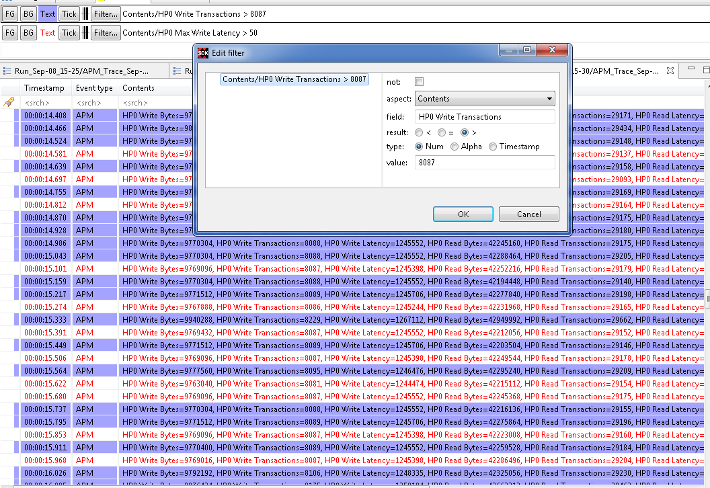

Colors View
The Colors view allows the user to define a prioritized list of color settings.

A color setting associates a foreground and background color (used in any events table), and a tick color (used in the Time Chart view), with an event filter.
In an events table, any event row that matches the event filter of a color setting will be displayed with the specified foreground and background colors. If the event matches multiple filters, the color setting with the highest priority will be used.
The same principle applies to the event tick colors in the Time Chart view. If a tick represents many events, the tick color of the highest priority matching event will be used.
Color settings can be inserted, deleted, reordered, imported and exported using the buttons in the Colors view toolbar. Changes to the color settings are applied immediately, and are persisted to disk.